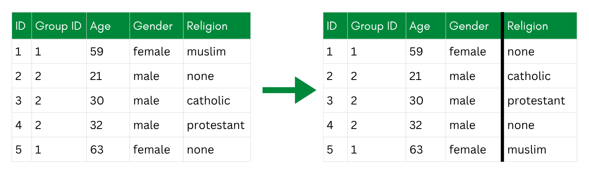
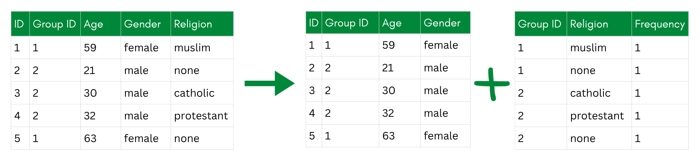

# Keep all indirect identifiers and one sensitive attribute (religion)
data_ana <- data_withoutidentifiers %>%
select(id, plz, gender, age, income, years_in_job, education, religion)De-Associative Techniques
TipLearning Objectives
After completing this part of the tutorial, you will
- know selected de-associative techniques.
- apply anatomization as one de-associative technique in R.
De-associative techniques protect privacy by breaking the link between indirect identifiers and sensitive variables, rather than altering the values themselves. The underlying idea is that even if an attacker can identify a person’s record based on their demographic attributes, they should not be able to learn their sensitive values from it.
The simplest version of this is just separating a dataset into two tables—one with the identifiers and one with the sensitive attributes, and randomizing the order of rows in one of them. The problem is that this makes it impossible to link any demographic context to the sensitive values, which severely limits what analyses can be done. It is more of a last resort than a practical technique for sharing research data.

More useful are approaches that preserve some analytical structure while still breaking the individual-level link—the two main ones being bucketization and anatomization.
Examples of De-Associative Techniques
Bucketization
Bucketization groups records into “buckets” based on their indirect identifiers (like age, gender, or postal code), with each bucket required to contain at least k records to satisfy k-anonymity. Within each bucket, the sensitive values—such as income or political opinions—are randomly shuffled among the records. The result is that an attacker might be able to narrow someone down to a bucket, but cannot tell which sensitive value belongs to which specific person within it.
The process works in three steps:
- Generalize the indirect identifiers to create buckets.
- De-generalize the identifiers within each bucket back to their original values.
- Permute the sensitive values randomly within each bucket.
The shuffling in step 3 is what makes this a de-associative rather than a perturbative technique—the values themselves are unchanged, only the assignment between records and sensitive attributes is broken within each group.

Anatomization
Anatomization is a cleaner alternative to bucketization that improves the properties of the resulting deassociation. Rather than shuffling values within buckets, anatomization splits the dataset into two separate tables:
- A quasi-identifier table containing the indirect identifiers (e.g., age, gender, postal code), with a group ID linking each record to its group.
- A sensitive table containing the sensitive attributes and the same group ID, but with the individual record links removed. Instead of one row per person, it stores, for each group, how often each sensitive value occurs.
A researcher re-using the data can still answer questions like “what is the distribution of political opinions among 30-44 year olds in postal region 8xxxx?” by joining on the group ID. But they cannot link any specific row in the sensitive table back to a specific individual in the quasi-identifier table—the individual-level association is gone. Within a group, every sensitive value is equally plausible for every member.

Anatomization builds on bucketization but adds a guarantee: each group is deliberately constructed to be l-diverse—it contains at least l different sensitive values. This is what protects against attribute disclosure: even an attacker who pins down someone’s group still faces at least l competing possibilities for their sensitive value.
To build such groups, Xiao and Tao (2006) do not group records by similarity. Instead, they sort the records into one bucket per sensitive value, then repeatedly form a new group by drawing one record from each of the l currently-largest buckets. This spreads the most common values across as many groups as possible and keeps every group diverse.
Anatomization is particularly useful when the sensitive attribute is the main focus of the research question, and when preserving group-level patterns is more important than individual-level linkage. For our dataset—where the research question is about the relationship between religion and political opinion—anatomization could work well: group-level associations are preserved, but no individual’s religion and political views can be read together.
However, anatomization does not protect against disclosure of attributes other than the sensitive variable since the indirect identifiers stay fully intact; it is therefore helpful, to combine it with other methods.
Exercise: Applying Anatomization
Let’s implement anatomization step by step, following the algorithm proposed by Xiao and Tao (2006). It is not available in sdcMicro, so we will build it ourselves with a lot of data wrangling. Because anatomization protects a sensitive attribute rather than the indirect identifiers, we work on a subset of the data that keeps all indirect identifiers plus one sensitive variable, religion.
Our data does not really need this level of protection—we use it here purely for demonstration.
The algorithm needs one parameter: the target level of l-diversity. l-diversity strengthens k-anonymity—it requires that every group contains at least l different values of the sensitive attribute, so that locating someone’s group still leaves l competing possibilities for their sensitive value. We aim for l = 2.
l <- 2 # every group must contain at least 2 different religionsStep 1: Bucket the data by the sensitive value
Target: Get an overview of the buckets. Create a character vector religions holding the distinct religion values, and a data frame bucket_sizes that counts how many records fall into each bucket.
NoteSolution
First, list all religion values that occur in the data. These define our buckets:
# All distinct values of the sensitive attribute
religions <- data_ana %>%
distinct(religion) %>%
pull(religion)
religions[1] "Catholicism" "None" "Islam"
[4] "Protestantism" "Buddhism" "Judaism"
[7] "Eastern Orthodoxy"Now count how many records fall into each bucket:
# Bucket sizes, largest first
bucket_sizes <- data_ana %>%
count(religion, sort = TRUE)
bucket_sizes religion n
1 None 75
2 Catholicism 56
3 Protestantism 50
4 Islam 13
5 Buddhism 3
6 Judaism 2
7 Eastern Orthodoxy 1
TipEligibility Condition
A condition for anatomization to work is the eligibility condition. Anatomization can only place every record into an l-diverse group if no single religion is too common: the largest bucket must not exceed n / l records; otherwise, the specific l-value cannot be fully reached.
Here, we can check that this is the case:
# Largest a bucket may be if we want to keep every record
n_total <- nrow(data_ana)
max_allowed <- n_total / l
eligibility <- bucket_sizes %>%
mutate(share = n / n_total,
within_limit = n <= max_allowed)Here, with l = 2, no group exceeds the limit of 100 (= 200 / 2). So we can make the dataset 2-diverse.
If this were not the case (e.g., when choosing l = 3), we would have records that would be left over. To still achieve the targeted l we would then need to suppress selected values.
Step 2: Build the l-diverse groups
Target: Create a working data frame pool — a copy of data_ana with an added group_id column — and fill in group_id by repeatedly opening a new group and taking one record from each of the l currently-largest buckets, until fewer than l buckets still have records. Because each record in a group comes from a different bucket, every group automatically holds l different religions.
NoteSolution
Rather than juggling one data frame per bucket, we track group membership in a single new column, group_id. We shuffle the rows once up front so the groups don’t follow the original row order, and set a seed so the result is reproducible.
set.seed(2026)
# One working table; group_id is filled in as we assign records.
pool <- data_ana %>%
slice_sample(prop = 1) %>% # shuffle the rows once
mutate(group_id = NA_integer_) # NA = not yet assigned
next_group <- 0L
# Grouping: while at least l religions still have unassigned records, open a new group and take one record from each of the l currently-largest buckets.
repeat {
# counts of still-unassigned records per religion, largest first
remaining <- pool %>%
filter(is.na(group_id)) %>%
count(religion, sort = TRUE)
# stop when fewer than l religions still have records
if (nrow(remaining) < l) break
next_group <- next_group + 1L
# the l religions with the most remaining records
top_religions <- remaining %>%
slice_head(n = l) %>%
pull(religion)
# take exactly one still-unassigned record from each of those religions
picks <- pool %>%
filter(is.na(group_id), religion %in% top_religions) %>%
group_by(religion) %>%
slice_head(n = 1) %>%
ungroup() %>%
pull(id)
# stamp those records with the new group id
pool <- pool %>%
mutate(group_id = if_else(id %in% picks, next_group, group_id))
}
next_group # number of groups created[1] 100Each pass draws from l different buckets, so every group we just built contains exactly l = 2 distinct religions.
In this case, all participants have been assigned to one group, without any leftovers in remaining. This is not naturally the case; often times, the algorithm will leave you at this point with a few individuals that have not been assigned. For that case, you follow the third step:
Step 3: Handle the leftover records (skip in case of no leftovers)
Target: Collect the still-unassigned records in a data frame leftovers, then update pool by slotting each leftover into an existing group that does not yet contain its religion. Records that fit into no group are collected in suppressed_ids and dropped from pool.
Once fewer than l buckets remain, the loop in Step 2 stops with some records still unassigned. We handle them here.
# Records left over when fewer than l religions remained unassigned.
leftovers <- pool %>% filter(is.na(group_id))
leftovers %>% count(religion)You then try to slot each one remaining participant into a group that has no one with the same sensitive value yet (so the group stays diverse). If no such group exists, the record cannot be released safely and has to be suppressed.
suppressed_ids <- integer(0)
for (rec_id in leftovers$id) {
# this record's religion
rel <- pool %>% filter(id == rec_id) %>% pull(religion)
# existing groups that do NOT yet contain this religion
open_groups <- pool %>%
filter(!is.na(group_id)) %>%
group_by(group_id) %>%
summarise(has_rel = any(religion == rel), .groups = "drop") %>%
filter(!has_rel) %>%
pull(group_id)
if (length(open_groups) > 0) {
# place it in the first eligible group
pool <- pool %>%
mutate(group_id = if_else(id == rec_id, open_groups[1], group_id))
} else {
# nowhere safe to put it → mark for suppression
suppressed_ids <- c(suppressed_ids, rec_id)
}
}
length(suppressed_ids) # how many records had to be dropped
# Drop the suppressed records
pool <- pool %>% filter(!(id %in% suppressed_ids))In the last step, we split this one dataframe pool into two dataframes, the anatomized tables.
Step 4: Split into the two anatomized tables
Target: Split pool into two data frames: ii_table, the indirect-identifier table (id, group_id, and all indirect identifiers, but no religion), and sensitive_table, the sensitive table (group_id, religion, and a per-group count, with no identifiers).
NoteSolution
# Indirect identifiers table: indirect identifiers + group id, NO religion.
ii_table <- pool %>%
select(id, group_id, plz, gender, age, income, years_in_job, education) %>%
arrange(group_id, id)
# Sensitive table: for each group, which religions occur and how often.
sensitive_table <- pool %>%
count(group_id, religion, name = "count") %>%
arrange(group_id, religion)
head(ii_table) id group_id plz gender age income years_in_job education
1 38 1 80799 female 18 58538.33 1 high school
2 45 1 79793 male 22 36923.45 5 doctoral title
3 108 2 1587 male 61 9709.52 5 trade school
4 164 2 47226 female 57 63828.73 10 high school
5 44 3 53773 male 49 44352.87 0 high school
6 176 3 49429 female 22 38736.53 5 high schoolhead(sensitive_table) group_id religion count
1 1 Catholicism 1
2 1 None 1
3 2 Catholicism 1
4 2 None 1
5 3 Catholicism 1
6 3 None 1The only thing the two tables share is group_id. Neither table on its own—and no join between them—reveals which religion belongs to which person.
A researcher can still study group-level patterns—for example, the religion distribution across age bands—by joining on group_id. But the individual link between a person and their religion is broken.
If this was the technique you would use for your dataset, you would save the two dataframes now and publish them like this, potentially with additional measures in place. We will, however, not use this further and instead resume the tutorial with the data as anonymized in the last chapter (2_4).
Pro and Contra De-Associative Techniques
Pros:
- can be highly privacy-preserving
Cons:
- complex and not implemented as predefined functions within a R package
- similar level of privacy can be reached by combining other techniques
Resources, Links, Examples
- See Carvalho et al. (2023) for more de-associative techniques.
- The anatomization algorithm we implemented here was introduced by Xiao & Tao (2006), Anatomy: Simple and Effective Privacy Preservation.
- For more on l-diversity and t-closeness, see this practical tutorial by Utrecht University.
References
Carvalho, Tânia, Nuno Moniz, Pedro Faria, and Luís Antunes. 2023. “Survey on Privacy-Preserving Techniques for Microdata Publication.” ACM Computing Surveys 55 (14s): 1–42. https://doi.org/10.1145/3588765.
Xiao, Xiaokui, and Yufei Tao. 2006. “Anatomy: Simple and Effective Privacy Preservation.” VLBD ’06, September 12. https://dl.acm.org/doi/10.5555/1182635.1164141.